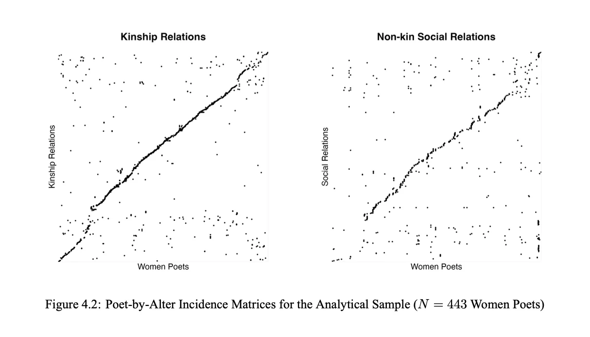
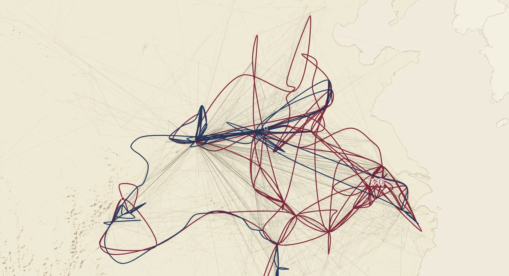
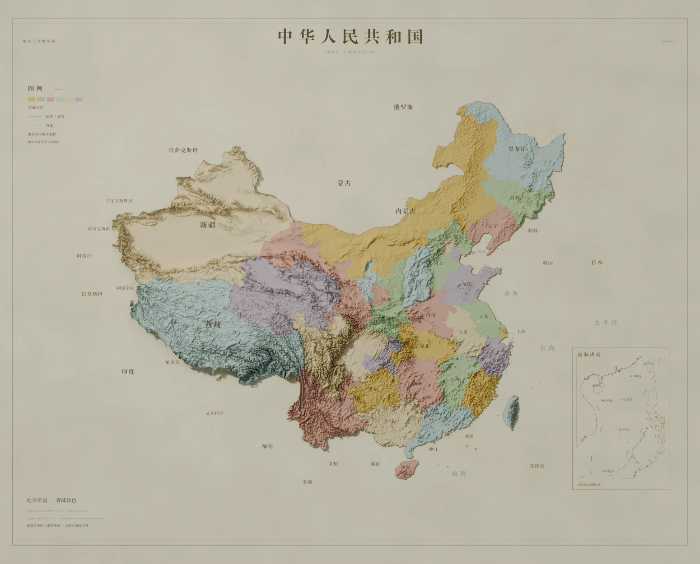
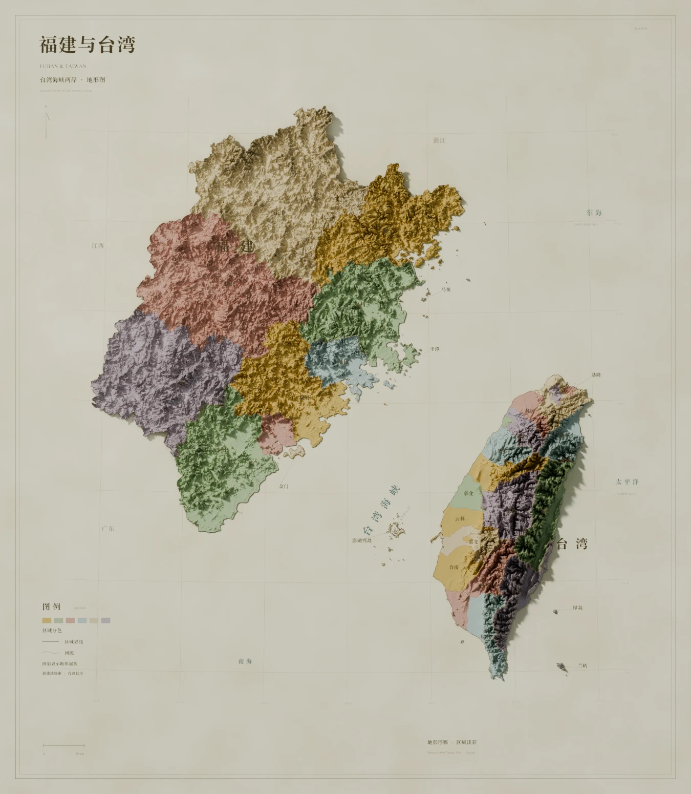
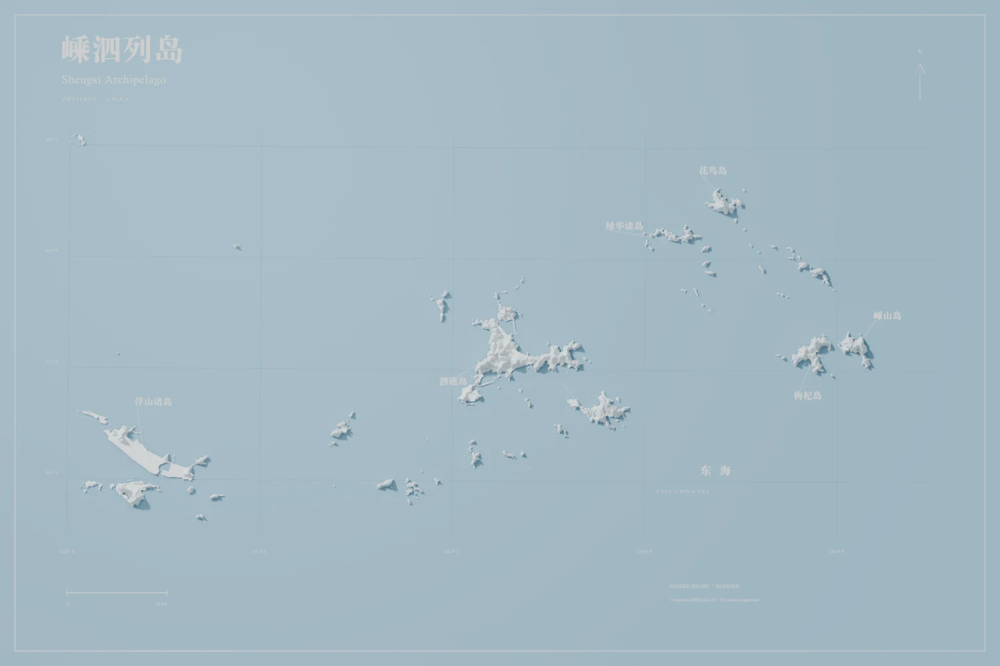
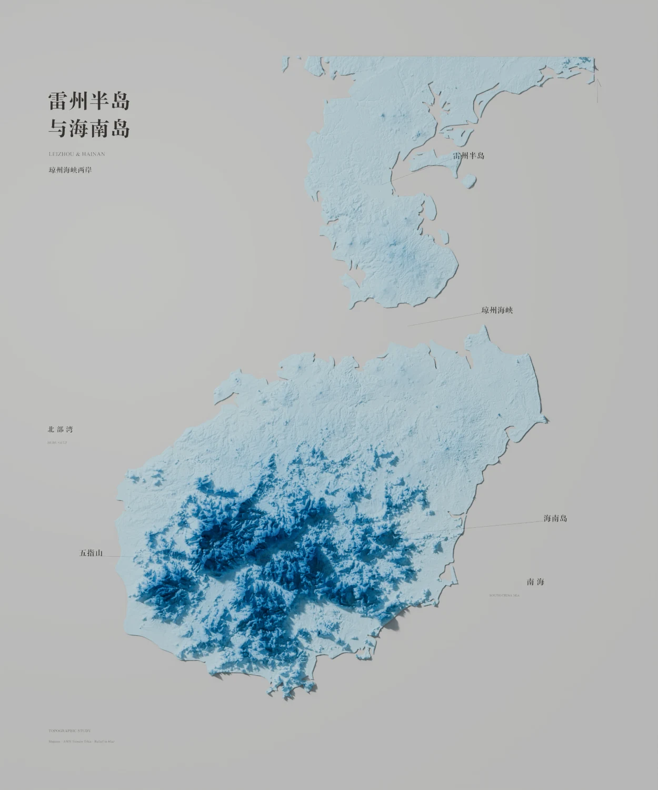

Extreme precipitation risk in Beijing, 1960–2024
Both tails are heavy (ξ > 0). The 100-year daily rainfall lands between 245 mm (GEV) and 298 mm (POT–GPD); the threshold model is the more conservative guide for flood planning.
Researcher /
data scientist /
visual maker
From extreme rainfall and on-chain voting to the networks of women poets in imperial China, I use statistical models, maps, and code to ask how risk and social structure take shape — and turn the answers into papers, interactive tools, and visual stories.
Open to data science, actuarial & risk analytics roles.
Capabilities
Five things I do repeatedly, the methods behind each, and the projects on this page that show them.
GLMs · extreme value theory (GEV, POT–GPD) · Bayesian MCMC · Double LASSO · regression discontinuity · R, Python
POI & hexagonal grids · OpenStreetMap routing · geocoding & historical gazetteers · dialect-distance clustering
CBDB · Ming Qing Women’s Writings · record linkage · network construction and centrality · descriptive statistics across dynasties
Canvas / D3 interactives · scroll-driven maps · Blender shaded relief · FFmpeg render pipelines · Skyfield ephemerides
Coding agents from prototype to release · data preparation and validation scripts · AI-drafted composition, hand-finished cartography
Selected work
Six projects across papers, maps, motion, and cartography. Everything else is in the archive below.
Both tails are heavy (ξ > 0). The 100-year daily rainfall lands between 245 mm (GEV) and 298 mm (POT–GPD); the threshold model is the more conservative guide for flood planning.

229 proposals across Uniswap, Arbitrum, Gitcoin, and Optimism. Governance effects persist, but divergence between the two votes weakens the value governance creates.

443 poets, CBDB × MQWW. Non-kin social ties, not kinship, predicted publishing an individual collection: one s.d. more social degree roughly doubled the odds (OR ≈ 2.06), while the kinship effect was not distinguishable from zero.

Interactive ↗Where 360 poets actually went: some 14,000 recorded stops traced on a paper-textured map, scroll by scroll.
Summer solstice to the Mid-Autumn full moon: the moon’s phase over Hong Kong, the solar terms, and a rolling 24-hour tide at Quarry Bay.

Four terrain studies: DEM preparation, AI-drafted composition and color, Blender shading, hand-finished cartography.
Archive
All research, writing, visual work, and tools, in compact form. Chinese articles open with an English preview.


Cities, landscapes & lives
Four terrain studies built through an AI-assisted workflow, from geospatial preparation and composition to Blender shading and final cartographic refinement.



Seven short demos from the city building-age series, kept together as one moving layer of the archive.
Photography
Eleven city archives. Click a city to open its wall.
Also